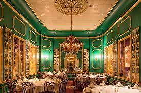

TIRTH'S Restaurant 

The first restaurant proprietor is believed to have been one A. Boulanger, a soup vendor, who opened his business in Paris in 1765. The sign above his door advertised restoratives, or restaurants, referring to the soups and broths available within. The institution took its name from that sign, and restaurant now denotes a public eating place in English, French, Dutch, Danish, Norwegian, Romanian, and many other languages, with some variations. For example, in Spanish and Portuguese the word becomes restaurante, in Italian it is ristorante, in Swedish restaurang, in Russian restoran, and in Polish restauracia. Although inns and hostelries often served paying guests meals from the host’s table, or table d’hôte, and beverages were sold in cafés, Boulanger’s restaurant was probably the first public place where any diner might order a meal from a menu offering a choice of dishes. Boulanger operated a modest establishment; it was not until 1782 that La Grande Taverne de Londres, the first luxury restaurant, was founded in Paris. The owner, Antoine Beauvilliers, a leading culinary writer and gastronomic authority, later wrote L’Art du cuisinier (1814), a cookbook that became a standard work on French culinary art. Beauvilliers achieved a reputation as an accomplished restaurateur and host, and the French aphorist and gastronomic chronicler Jean-Athelme Brillat-Savarin, a frequent guest, credited Beauvilliers with being